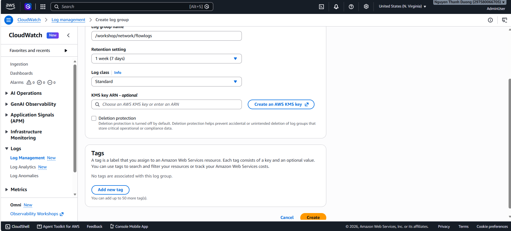
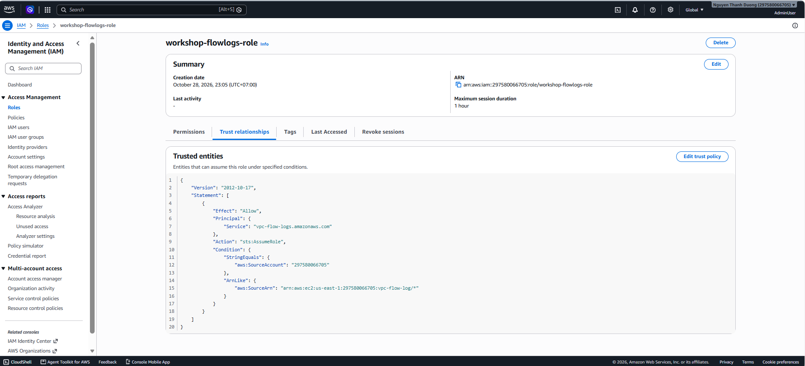
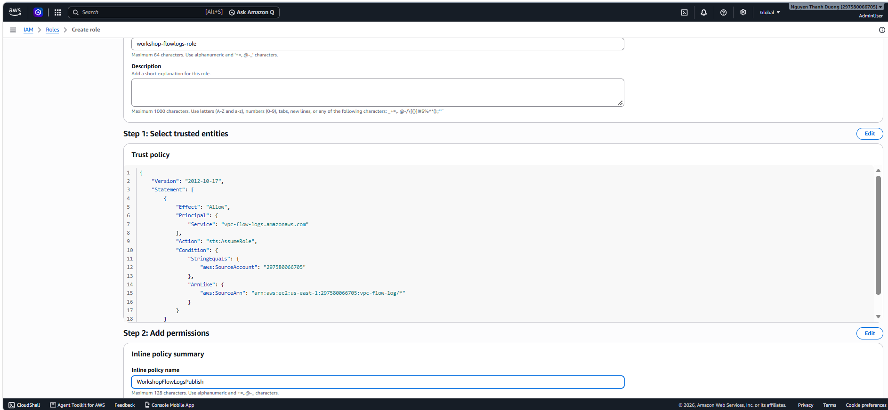
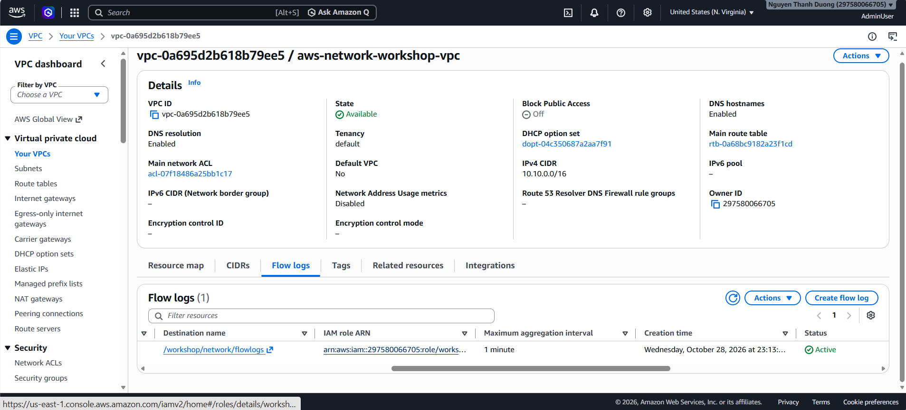
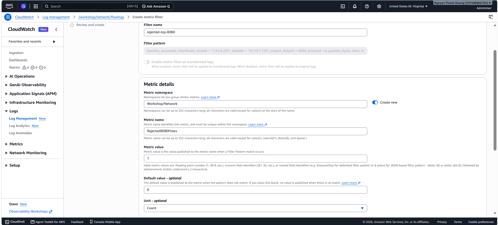
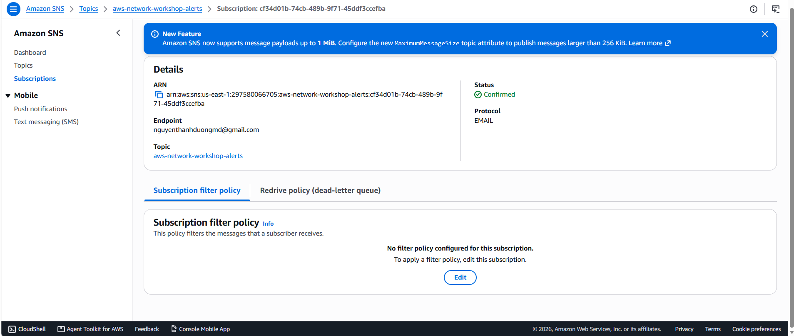
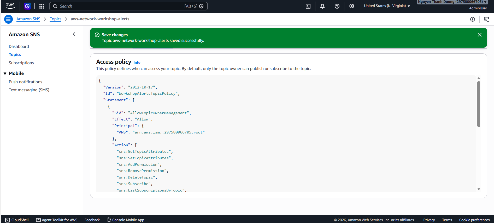
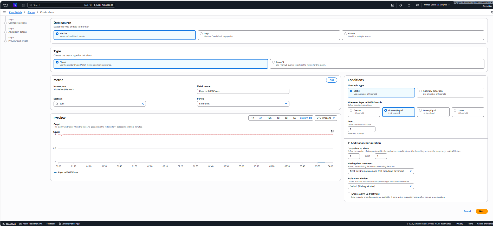

Phần này cấu hình hệ thống thu thập lưu lượng mạng và gửi cảnh báo qua email.
Các thành phần gồm:
Thực hiện trong United States (N. Virginia) — us-east-1, thống nhất với lần triển khai ở phần 5.3.
Nếu tài nguyên đã tồn tại đúng cấu hình, mở lại để kiểm tra và chụp minh chứng.
| Thông tin | Cách lấy |
|---|---|
| Account ID | Menu tài khoản AWS, gồm 12 chữ số |
| VPC ID | VPC → Your VPCs |
| Public IPv4 của EC2 | EC2 → Instances → chọn instance → Details |
| Private IPv4 của EC2 | Trong cùng tab Details |
| Public IP máy thực hành | Source của rule HTTP trong Security Group |
| Email nhận cảnh báo | Email có thể mở liên kết xác nhận SNS |
Trong các đoạn JSON, thay ACCOUNT_ID bằng Account ID thực tế.
Trong filter pattern:
CLIENT_PUBLIC_IP bằng public IP máy thực hành, không kèm /32.EC2_PRIVATE_IP bằng private IPv4 của EC2.Nếu sử dụng policy đã chuẩn bị cho Singapore, cần cập nhật điều kiện Region và các ARN có chứa Region sang
us-east-1. ARN của IAM role không có thành phần Region.
| Trường | Giá trị |
|---|---|
| Log group name | /workshop/network/flowlogs |
| Log class | Standard |
| Retention | 7 days |
Nếu chưa đặt retention lúc tạo, quay lại danh sách log group, nhấn giá trị tại cột Retention, chọn 7 days → Save.
Log group cần dùng class Standard để hỗ trợ metric filter.
Ảnh 1: Chụp tên log group, log class và retention sau khi tạo.

ACCOUNT_ID:{
"Version": "2012-10-17",
"Statement": [
{
"Effect": "Allow",
"Principal": {
"Service": "vpc-flow-logs.amazonaws.com"
},
"Action": "sts:AssumeRole",
"Condition": {
"StringEquals": {
"aws:SourceAccount": "ACCOUNT_ID"
},
"ArnLike": {
"aws:SourceArn": "arn:aws:ec2:us-east-1:ACCOUNT_ID:vpc-flow-log/*"
}
}
}
]
}
workshop-flowlogs-role.Trust policy cho phép dịch vụ VPC Flow Logs sử dụng role, giới hạn nguồn gọi theo tài khoản và Region của bài.
Nếu role đã được tạo, mở Trust relationships → Edit trust policy để kiểm tra hoặc cập nhật cấu hình.
Ảnh 2: Chụp tab Trust relationships, thấy service principal và điều kiện nguồn gọi.

workshop-flowlogs-role.ACCOUNT_ID:{
"Version": "2012-10-17",
"Statement": [
{
"Sid": "PublishWorkshopFlowLogs",
"Effect": "Allow",
"Action": [
"logs:CreateLogGroup",
"logs:CreateLogStream",
"logs:PutLogEvents",
"logs:DescribeLogStreams"
],
"Resource": [
"arn:aws:logs:us-east-1:ACCOUNT_ID:log-group:/workshop/network/flowlogs",
"arn:aws:logs:us-east-1:ACCOUNT_ID:log-group:/workshop/network/flowlogs:*"
]
},
{
"Sid": "DescribeLogGroups",
"Effect": "Allow",
"Action": "logs:DescribeLogGroups",
"Resource": "*"
}
]
}
WorkshopFlowLogsPublish.Nếu inline policy này đã tồn tại, chỉnh sửa policy hiện có.
Ảnh 3: Chụp permissions policy đã lưu trong role.

Danh tính tạo Flow Log cần có quyền iam:PassRole đối với:
arn:aws:iam::ACCOUNT_ID:role/workshop-flowlogs-role
Quyền này được cấp cho người tạo Flow Log. Permissions policy của service role quy định quyền ghi log mà dịch vụ sẽ sử dụng.
| Trường | Giá trị |
|---|---|
| Name, nếu hiển thị | aws-network-workshop-flowlogs |
| Filter | All |
| Maximum aggregation interval | 1 minute |
| Destination | Send to CloudWatch Logs |
| Destination log group | /workshop/network/flowlogs |
| Service access | Sử dụng role có sẵn |
| IAM role | workshop-flowlogs-role |
| Log record format | AWS default format |
Giữ AWS default format để filter pattern ở mục 6 khớp đúng thứ tự các trường.
Flow Logs cần thời gian tổng hợp và chuyển dữ liệu. Aggregation interval một phút không bảo đảm bản ghi xuất hiện trong CloudWatch ngay sau một phút.
Ảnh 4: Chụp Flow Log, trạng thái, log group đích và IAM role.

/workshop/network/flowlogs.[version, accountid, interfaceid, srcaddr = "CLIENT_PUBLIC_IP", dstaddr = "EC2_PRIVATE_IP", srcport, dstport = 8080, protocol = 6, packets, bytes, start, end, action = "REJECT", logstatus = "OK"]
Thay hai placeholder bằng IP thực tế trước khi tạo filter.
| Điều kiện | Ý nghĩa |
|---|---|
srcaddr |
Public IP máy thực hành |
dstaddr |
Private IPv4 của EC2 |
dstport = 8080 |
Cổng đích của lượt thử |
protocol = 6 |
Giao thức TCP |
action = "REJECT" |
Lưu lượng bị từ chối |
logstatus = "OK" |
Bản ghi lưu lượng được ghi nhận bình thường |
Nếu đã có log phù hợp, có thể dùng Test pattern để kiểm tra. Kết quả thử pattern cần được phân biệt với minh chứng kiểm thử thực tế ở phần 5.5.
Chọn Next và điền:
| Trường | Giá trị |
|---|---|
| Filter name | rejected-tcp-8080 |
| Metric namespace | Workshop/Network |
| Metric name | Rejected8080Flows |
| Metric value | 1 |
| Default value | 0 |
| Unit | Count |
| Dimensions | Để trống |
Chọn Next → Create metric filter.
Mỗi bản ghi khớp filter đóng góp giá trị 1 vào metric.
Metric filter chỉ xử lý dữ liệu mới sau khi được tạo. Default value 0 áp dụng khi có log được nhận nhưng không có bản ghi khớp; khoảng không nhận log vẫn có thể thiếu dữ liệu.
Ảnh 5: Chụp filter pattern, namespace, metric name và metric value đã lưu.

| Trường | Giá trị |
|---|---|
| Type | Standard |
| Name | aws-network-workshop-alerts |
| Trường | Giá trị |
|---|---|
| Topic ARN | Topic của workshop |
| Protocol | Email |
| Endpoint | Email nhận cảnh báo |
Ảnh 6: Chụp subscription đã xác nhận, không còn Pending confirmation.

aws-network-workshop-alerts.Statement của policy hiện có.ACCOUNT_ID bằng Account ID thực tế.{
"Sid": "AllowWorkshopAlarmPublish",
"Effect": "Allow",
"Principal": {
"Service": "cloudwatch.amazonaws.com"
},
"Action": "sns:Publish",
"Resource": "arn:aws:sns:us-east-1:ACCOUNT_ID:aws-network-workshop-alerts",
"Condition": {
"StringEquals": {
"aws:SourceAccount": "ACCOUNT_ID"
},
"ArnEquals": {
"aws:SourceArn": "arn:aws:cloudwatch:us-east-1:ACCOUNT_ID:alarm:aws-network-workshop-rejected-8080"
}
}
}
Statement này cho phép alarm được chỉ định gửi thông báo vào topic.
Ảnh 7: Chụp access policy sau khi lưu.

Rejected8080Flows.Nếu chưa thấy metric, cần có dữ liệu mới sau khi filter được tạo:
http://EC2_PUBLIC_IP:8080 vài lần, thay EC2_PUBLIC_IP bằng public IPv4 thực tế.Sau khi tạo alarm, thực hiện một lượt thử mới ở phần 5.5 để đối chiếu đầy đủ thời gian, log, metric và email.
| Trường | Giá trị |
|---|---|
| Statistic | Sum |
| Period | 5 minutes |
| Threshold type | Static |
| Whenever metric is | Greater/Equal |
| Threshold value | 1 |
| Datapoints to alarm | 1 out of 1 |
| Missing data treatment | Treat missing data as good (not breaching) |
Điều kiện cảnh báo là Sum >= 1 trong khoảng đánh giá năm phút.
Chọn Next.
Trong Configure actions:
| Trường | Giá trị |
|---|---|
| Alarm state trigger | In alarm |
| Send a notification to | Select an existing SNS topic |
| SNS topic | aws-network-workshop-alerts |
Chọn Next và nhập:
| Trường | Giá trị |
|---|---|
| Alarm name | aws-network-workshop-rejected-8080 |
| Description | Notify when matching rejected TCP 8080 flow records are detected. |
Kiểm tra Preview và chọn Create alarm.
Ảnh 8: Chụp metric, điều kiện alarm và SNS action đã cấu hình.

| Tệp ảnh | Nội dung cần thấy |
|---|---|
01-log-group.png |
Tên log group, class Standard và retention |
02-role-trust.png |
Trust policy của role Flow Logs |
03-role-permissions.png |
Permissions policy ghi log |
04-flow-log.png |
Flow Log và cấu hình đích |
05-metric-filter.png |
Filter pattern và metric |
06-sns-subscription.png |
Email subscription đã xác nhận |
07-sns-policy.png |
Quyền CloudWatch publish vào SNS |
08-alarm-config.png |
Metric, ngưỡng và SNS action của alarm |
us-east-1.Workshop/Network → Rejected8080Flows.Trạng thái OK khi thiếu dữ liệu chưa xác nhận toàn bộ chuỗi giám sát hoạt động.
Tiếp tục 5.5 — Kiểm thử để đối chiếu kết nối, bản ghi REJECT, metric, trạng thái ALARM và email nhận được.